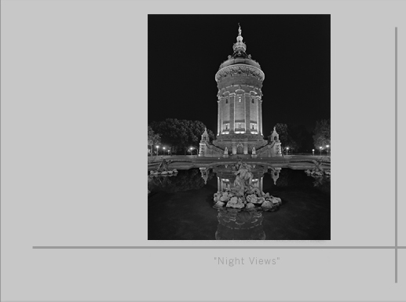

In Memoriam
Martin Blume
* 23. November 1956, Herrsching/Ammersee † 10. Mai 2015, Landau i.d. Pfalz

Das Sichtbarmachen der Vision, das Begreifbarmachen der Emotion,
das gelingt mir am besten mit der Photographie.
Eigentlich ist mir die Malerei am nächsten,
aber ich bleibe doch letztendlich der, der ich bin:
Der mit dem Licht zeichnet.
Donner corps à une vision, rendre palpable une émotion —
c'est à travers la photographie que j'y parviens le mieux.
Mais je demeure fidèle à ce que je suis :
Celui qui peint avec la lumière.
Martin Blume
Vita
| 1973 – 1976 | Lehre als Chemigraph in Kaiserslautern |
| 1984 | Zweiter Bildungsweg, Abitur in Neuss |
| seit 1986 | Intensive Auseinandersetzung mit dem Medium Photographie |
| 1987 – 1988 | Entwicklung der „Psychographie" aus der Synthese von Psychologie und Photographie |
| 1989 | Erste Ausgabe der „Série Populaire" |
| 1991 | Agfa-Ehrenpreis der „Large Format Photo Foundation" für „Bel Arbre" Konzeption und Bau des 8×10inch Vergrößerers „Landauer II" |
| 1994 | Berufung in die „Deutsche Gesellschaft für Photographie" (DGPh) |
| 1997 | Diplom in Psychologie, Universität Koblenz-Landau |
| 1998 | Gründung der „Academia Palatina" zur Förderung der klassischen Schwarz-Weiß-Photographie |
| 2004 | Berufung in die „Arbeitsgemeinschaft Pfälzer Künstler" (APK) |
| 2005 | Initiierung der „Classic Photography" |
| 2009 | Kunstpreis der Stadt Annweiler am Trifels |
| 2011 | „Ludwig" – Ehrenpreis, Fototage Pirmasens |
| 2012 – 2013 | Aufbau und Ausführung „dm-Fotografie-Werkstatt" mit Breuer+Nohr und dm-drogerie markt |
| seit 2008 | Künstlerische Beratung und Coaching |
Ausstellungen · Expositions
2015
„Verdun — 100 Jahre danach. Eine deutsch-französische Spurensuche"
2. April – 2. August 2015 · Schloss Villa Ludwigshöhe, 67480 Edenkoben
gemeinsam mit Emmanuel Berry
2015
„Auschwitz heute"
27. Januar 2015 — 70. Jahrestag der Befreiung
Projekt gemeinsam mit der Bundeszentrale für politische Bildung (bpb) und dem Auschwitz-Birkenau State Museum
2014
„Verdun — 100 Jahre danach. Eine deutsch-französische Spurensuche"
6. Juli – 26. Oktober 2014 · Festung Ehrenbreitstein, 56077 Koblenz
2006 – 2007
„Vestiges"
Landesmuseum Koblenz, Festung Ehrenbreitstein · Berlin (Vertretung Rheinland-Pfalz) · Mainz (LRP Landesbank)
2005
„Vestiges" — Martin Blume & Douglas I. Busch
September – Oktober 2005 · Burg Trifels, Annweiler am Trifels
Oktober – November 2005 · Maison de l'Archéologie du Vosges du Nord, Niederbronn-les-Bains, Alsace
1999 – 2000
„La Frontière en Tête — Die Grenze im Kopf"
Kunstverein Villa Streccius, Landau i.d. Pfalz · Centre Européen d'Actions Artistiques Contemporaines, Strasbourg
1993 – 1999
Zahlreiche Einzel- und Gruppenausstellungen
u.a. Nikon Galerie Düsseldorf · Studio DuMont Köln (mit Günter Wallraff) · Rudolf-Scharpf-Galerie Ludwigshafen · Universität Kaiserslautern · Galerie Alte Feuerwache Mannheim · photokina 1992, 1994, 1996, 1998
Publikationen
Hentrich & Hentrich Verlag, Berlin, 2015
bpb, Bundeszentrale für politische Bildung, Bonn, 2015
Martin Blume & Emmanuel Berry — Hentrich & Hentrich Verlag, Berlin, 2014
Lindemanns Verlag, Stuttgart, 2011
Martin Blume & Bernd Radtke — Verlag der Universitätsdruckerei H. Schmidt, Mainz, 2009
Martin Blume & Douglas Busch — Lindemanns Verlag, Stuttgart, 2005
Lindemanns Verlag, Stuttgart, 2000
Edition Quadrat, Mannheim, 1997
Edition Quadrat, Mannheim, 1993
Werke in öffentlichen Sammlungen
- Deutsche Bank AG, Frankfurt am Main
- Los Angeles County Museum of Art
- Faulconer Gallery, Grinnell, Iowa
- Landesbank Rheinland-Pfalz, Mainz
- Kreismuseum Torgau-Oschatz, Sachsen
- Dorint Kongress-Hotel, Karlsruhe
- Lotte Reimers Stiftung, Deidesheim
- Ministerium für Bildung und Kultur, RLP
- Landessammlung Fotografie RLP, Koblenz
- Sparkasse Südliche Weinstraße, Landau
- Sammlung der Stadt Hannover
- Sammlung der Stadt Annweiler am Trifels
sowie zahlreiche Privatsammlungen
Galerie


Kontakt
Oder direkt per E-Mail · Or directly by email:
info@feinste-photographien.com
Erinnerungen teilen · Partager un souvenir
Wenn Sie Martin Blume persönlich kannten oder sein Werk Sie berührt hat, freuen wir uns über Ihre Worte.